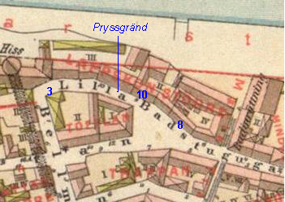
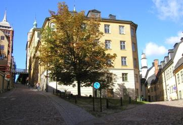
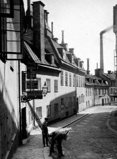
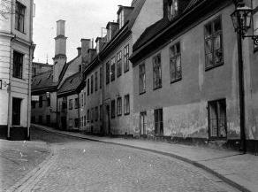
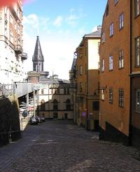
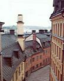
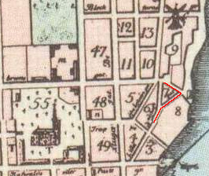
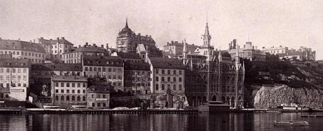

|
Pryssgränd
Om Sven Sahlberg
av Birgitta Yman
|

Pryssgränd hette tidigare Lilla Bastugatan. 1885
| |

 Pryssgränd (tidigare Lilla Badstugatan) till höger, Bastugatan till vänster. Bilden från öster.
Pryssgränd (tidigare Lilla Badstugatan) till höger, Bastugatan till vänster. Bilden från öster.
|
|

Pryssgränd 8-10 från väster. Närmast i bild nr 10. 1922
|
|

Pryssgränd 8-10 från öster. Närmast i bild nr 8. 1922
|
|

Bellmansgatan ned mot Pryssgränd. Bellmansgatan 1 och 5 till höger och Mariahissen rakt fram.
|
|
Ur Stockholms gatunamn
Namnberedningen föreslog år 1921, att dåvarande Lilla Bastugatan skulle få namnet Pryssgränd för att
förhindra förväxling med Bastugatan. »Det föreslagna namnet hänför sig till Stora Pryssan, en kvarn, som låg
strax väster om gatan». Kvarnen Stora Pryssan låg i kvarteret Bössan; i kvarteret Kattfoten Mindre låg Lilla
Pryssan. Båda kvarnarna markeras på Tillaeus' karta 1733, som också anger deras namn.
|

|
|
I Holms tomtbok
1679 omtalas den förra kvarnen såson »Herr Borgmästaren Anders Gerners Quarnplatz». Lilla Pryssan kallas
1669 »gudmund Spakz Qwarn» och 1672 »Spakens qwarn». Samma namn förekommer i
Holms tomtbok 1679, som också har namnet »Erne Crantz Qwarn»; på »Wälb:ne Assessorn Erne Cranz Quarne
platz» har Holm ritat en kvarn. Gudmund Spaak blev adlad under namnet Ehrencrantz.
|
|
|

|
Under 1600-talet är det i
Sverige vanligt med skrivningar såsom Pryssen för Preussen och pryss och pryssare för
preussare. Anledningen till att kvarnarna senare får namnen Stora och Lilla Pryssan kan därför ha varit, att de
förvärvats av rådmannen Hans Preuss (1636-1711), 1695 adlad Ehrenpreuss, som var delägare i det sockerbruk
som låg på berget. Det saknas dock uppgifter om att Hans Preuss verkligen varit kvarnägare.
På Tillaeus' karta räknades nuvarande Pryssgränd och östra delen av nuvarande Bastugatan såsom en gata
med namnet Lilla Bastugatan. Detsamma var fallet vid tiden för namnrevisionen 1885, då man vidtog den
förändringen att nuvarande Pryssgränd fick behålla namnet Lilla Bastugatan, medan gatans fortsättning öster ut
inräknades i Bastugatan .
|

"Baksidan" av Pryssgränd, som vetter mot Söder Mälarstrand. 1888
|
|
Till gatan i sin helhet eller till delar av denna har sedan 1640-talet varit knutna olika namn. Den kallas
sålunda 1646 »Brennewijns grenden». Att här har bott brännvinsbrännare framgår av en uppgift från 1647, som
omtalar »ährligh och förstandig Måns Andersons brennewijnsbrennares Nye huus och gårdztompt wthi Södre
Förstaden och Norredelen wedh Melaren belägin».
|
En annan brännvinsbrännare har gett upphov till namnet Måns Brinks Gränd, som omtalas 1679. År 1801
nämns »Ofra och Lilla Bastugu Gatorne (hwilcken sednare fordom kallades Måns Brinks Gränd)». Denne Måns
Brink var även kvarnägare i kvarteret Bergsgruvan; år 1656 omtalas »Måns Brincks wäderqwarn», på Tillaeus'
karta kallad Brinckan.
I Holms Tomtbok 1679 uppträder gatan under namnen »Badstuge gatan», »Needre Badstuge gatan» och »Lilla
Bastwge gattan».
|
|